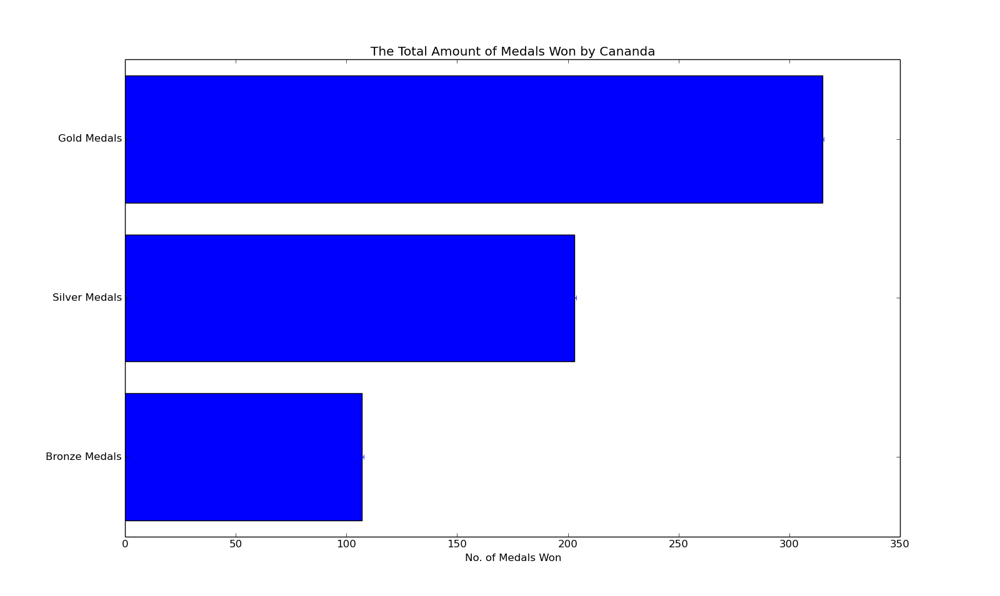
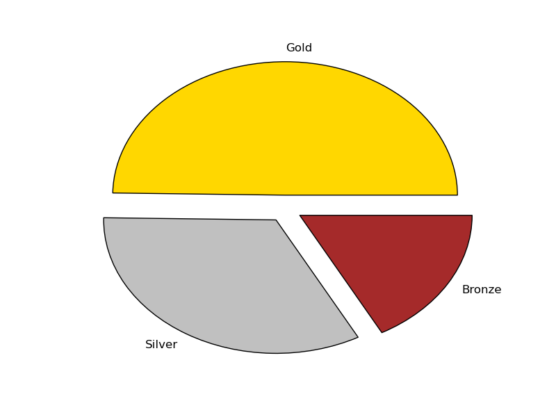
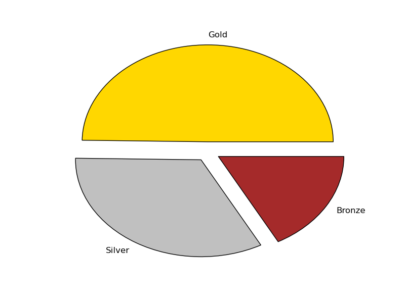

Main Image

In the beginning, women participation in the Olympics was considered an impractical and incorrect idea by the founder of modern Olympics, Pierre de Coubertin. The logic was based on the assumption that certain sports were simply too strenuous on women, such as long distance events. Despite the oppositions, women particpation in the Olympic Games began in 1896 and continues to increase in numbers along the years. For Canada, the focus is on the historiical trends in women's particpation in the Olympics: amount comparison relative to men athlete participation, medal counts between the two genders, as well as relative between nations (Canada and the United States).
According to the charts provided beside, Canada and United States as centuries old sports rivals. Despite Canada holding the most gold medals won overall between 1924 - 2014 (315 medals), United States hold the first position in the Olympics with 653 total medals compared to Canada's 625 total medals. With the upcoming, but delayed Olympic games, Canada has a 32 medals difference to make in order to take over United States position.

These charts demonstrate female participation at the 1976 and 2014 Olympics, with Canada having 25% more women olympians comapred to United States team. Along each Olympic game, female participation slowly increases around 5%. Growth in the number of female athletes largely mirrored growth in the number of male athletes up until 1996, when growth in the number of male athletes leveled off at ~8000, while the number of female athletes continued to grow at a high rate. The participation of female athletes reached its highest point during the most recent Olympiad (Sochi 2014 and Rio 2016), in which slightly more than 44% of Olympians were women.
 

These charts demonstrate the general results of female and male participation. They indicate that female olympic results were better (won more gold and silver medals) compared to men athletes.
The historiical trends in women's particpation in the Olympics has surely and quickly increased for the better as demonstrated from the charts involving the female amount relative to men athlete participation, medal counts between the two genders, as well as a comparison between the long-time rivalling nations (Canada and the United States). Overall, female particpation is at an all time high with 44% of Canada's Olympic team formed an impressive but second class tier of female athletes.